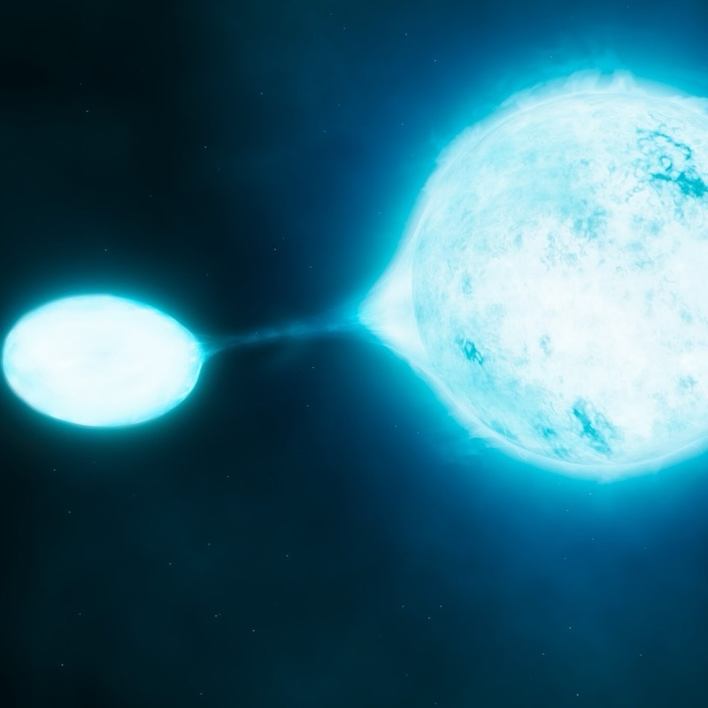
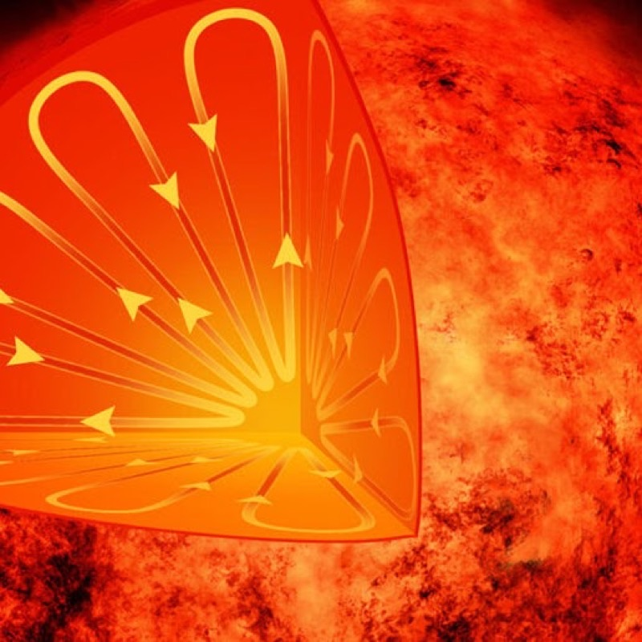
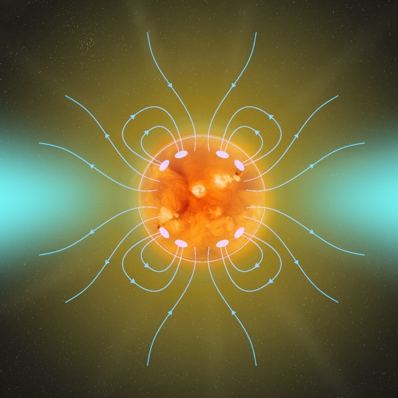
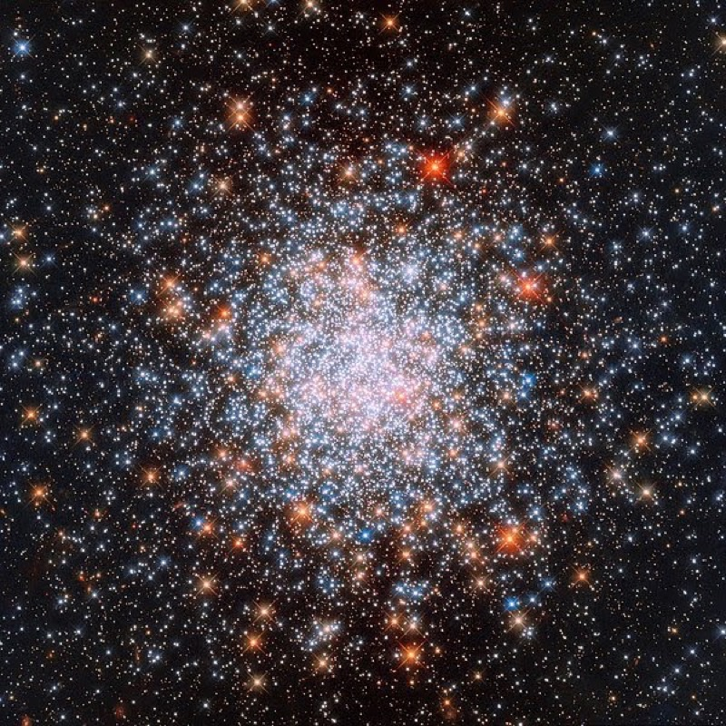
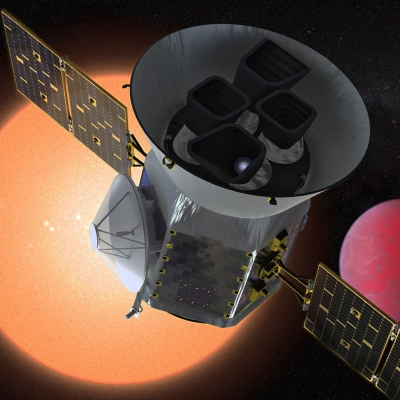
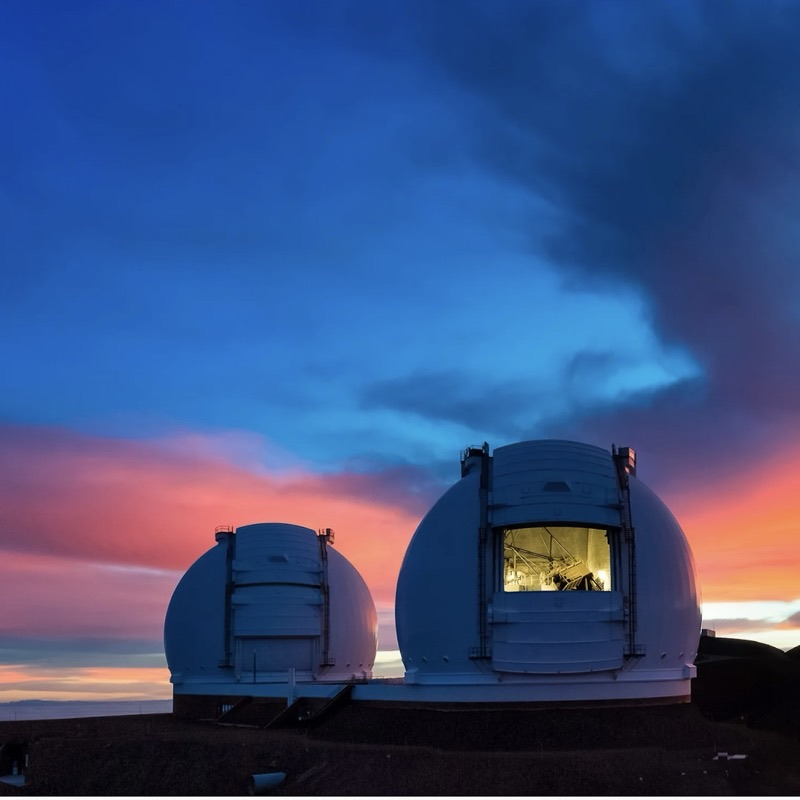

Binary Interactions
Discovery of stars that should not exist, unless they have undergone mass transfer.
Beatrice Watson Parrent Fellow
University of Hawaiʻi at Mānoa
I am an astronomer at the Institute for Astronomy of the University of Hawaiʻi at Mānoa. I obtained my PhD from the University of Sydney in 2023, and I will join the Department of Astronomy at Tsinghua University as an assistant professor in 2027.
I am broadly interested in stellar astrophysics and specialize in asteroseismology, the study of stellar oscillations. Almost every star in the sky pulsates, just like a musical instrument hitting some notes. I study these variabilities to understand the physics of stellar interiors, through precision observations and stellar modeling, using data from space telescopes (Kepler, TESS, Roman, PLATO, Earth 2.0) and ground-based facilities (SONG, Keck/KPF, and VLT/ESPRESSO).
Stars are also wonderful tracers. I work on stellar characterization to study Galactic archaeology, star-planet interaction, and exoplanet characterization.
I work at the interface between observations and theory: I develop techniques to measure stars precisely, then use those measurements to study the physics of stellar interiors.
Publications on ADS: All First-author

Discovery of stars that should not exist, unless they have undergone mass transfer.

Prescribing the asteroseismic surface effect and constraining convective mixing in stellar models.

Revealing the stellar spin-down relation beyond 4 Gyr.
Uncovering evidence that stellar mass loss on the red giant branch decreases with metallicity.

Anchoring asteroseismic scaling relations, decoupling mixed modes, measuring stellar properties, and quantifying their uncertainties.

Asteroseismology using space missions, such as Kepler and TESS.

Asteroseismology using Keck/KPF, VLT/ESPRESSO, and SONG.